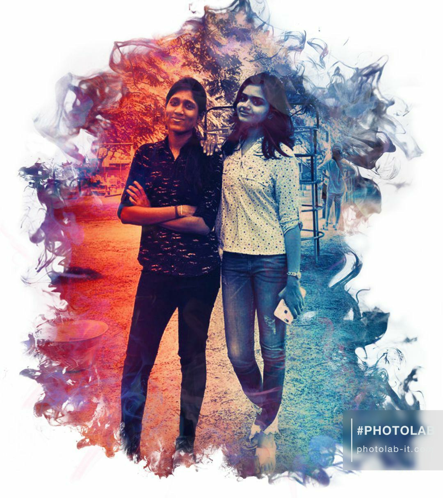

A picture is worth with a thousand words,
but the memories are priceless! ♥
Hey Indhu,
Hope u are safe and doing good. Am so happy that I found you in college. I wish we could have met first itself. Though we know each other earlier, we haven't catched up. Na una karthika kuda clg la pathurukan and I know unga gang ae romba sweet. Namma nalla attach aanadhu placements time la dha. I didn't feel like I was new to you people. Though I was with my frnds, at times apdiyae edhum pesama chumma thaniya irundhan , placement stuffs lam yosichutu. Apo you are the one who made my mind to change. It was not like first time talking with you, edho romba years friendship mari feel aachu.
Namma onna funs panom , nariya pesunom , u even shared your snacks when I was hungry . Ena romba pasama pathukuta . Namma onna padichom . Am so happy that you got placed in CTS . But after placements , namalala clg la avolova catch up panna mudila . Aana texts la touch la yae dha irundhom . Veliya meet pananum nu romba nal plan potom, but situation crt ha varala namaku . Karthika bday apo namma meet panadhu enaku romba happy aachu . Ur gang la na oru new member mari enaku feel aala . I was so so comfortable with you guys. Nariya snacks saptan aniku . Uncle is also so sweet . U took care of me so well da .
Apro apdiyae pochu . Arvind bday meet apo , enakaga ne vandha . Which made me feel how much important am to u . Enaku munadiyae vandhu , surprise pananum nu lam efforts edutha . IDK ne ila na andha day enala avolo good ha avanuku paniruka mudiyum ha nu . Thank you so much for that da. IK thanks will not be enough for what you made . We took some of the best pictures on that day (which we longed to take for a long time). I missed you so much on tour da . Am not that type of person who express everything on social media . Unuku stories lam kuda nariya potan ha nu therila . But deep inside , I missed you a lot . Enamo un-filled ha irundhuchu . Ne irundhurundha complete airukum . Ino nariya memories create panirukalam namma . Apro I was very happy after knowing you got ur intern in CTS . Though ne work panra nu happy ha irundhalum , again I missed you . Symposium apo also namalala meet panna mudila . Enamo these places la ne kuda irundha ino better ha feel panirupan.
Apro this lockdown start airuchu , ino suthama meet panna mudila . But texts la namma asusual ha pesitae irundhom . That cute kiddish things, mokka jokes lam koraiyavae ila namakulla . My bday ku ne edutha efforts la I was impressed . First thank you for making that video which swetha mami asked da . And neyum romba nariya surprises panna . One month before la irundhae my bday ku countdown panna . Admist all your busy works , enakaga time eduthu panna which touched my heart so well . No costlier gifts can be compared to this da . My bday before night ae na thoonga poran nu surprise panna . Mrng call , one hour ku once surprise panna . Adhum each and every pic edit lam panni . Even texts la lam also surprise panna , which too showed how much you loved me .
This lockdown ilana kandipa namma meet panirupom . Playing LUDO with you was even more fun . Ena ne pasama babe babe nu solum mothu , it will make me feel spl . My life la many people vandhurukanga , close ha irundhurukanga , but edho misunderstandings or edhachu reason naala poirukanga . Apdi unaiyum na lose panna virumbala . Ik it will never ever happen . Enga un kuda nariya pics or posts social media la pota , namma mela kannu pattu edhachu airum oh nu bayandhae na edhum podradhu ila . IDK how am going to pay back for all you did , for all the love you showered on me . Am so happy that you got good friends too . Karthika va lam enaku school days la irundhae theriyum . She will give so much importance to friends and she will care them so much . Such a gem she is! ♥. And you are so spl to me . Such a sweeeeeet person , I met in my life . Am so lucky for that .
Feeling so light now. On this friendhip day, I just ask you for one thing. "Keep in touch" forever. Wherever you go, whatever position you are in, 'remember me' and thats all I want from you. Stay blessed and IK your career will be great!. Hope you loved this page! and our journey splashed I guess. Take care, Stay safe, vetla elarum ketadha sollu. Before winding up, take a quick look at this.
Click the link below for a little surprise!
Pulingoo
With love,
Your babe.